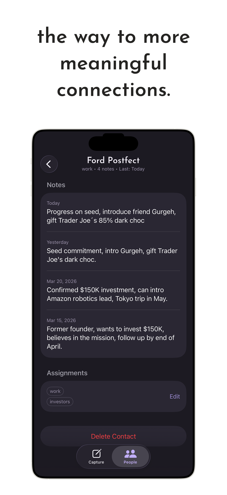
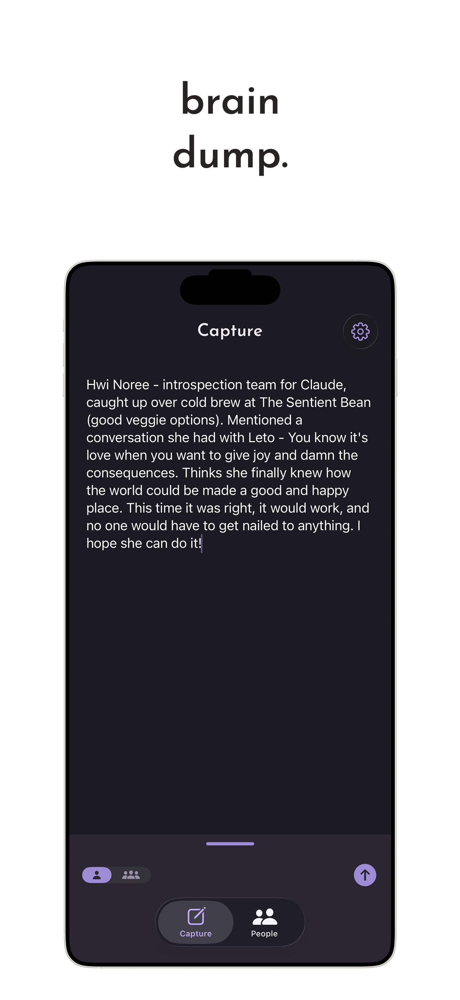
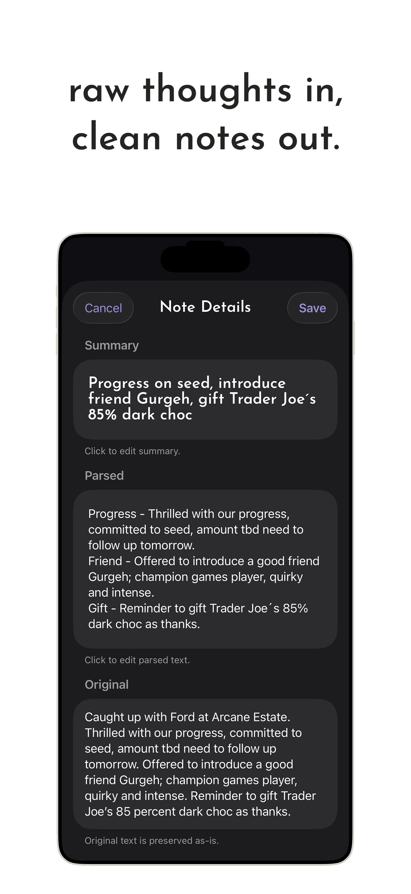
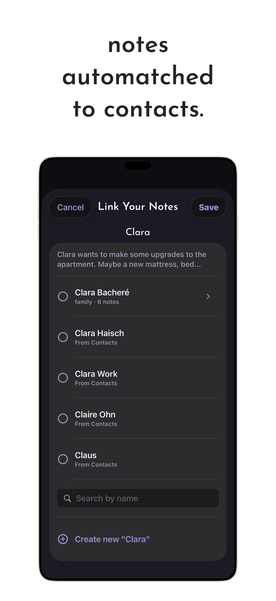
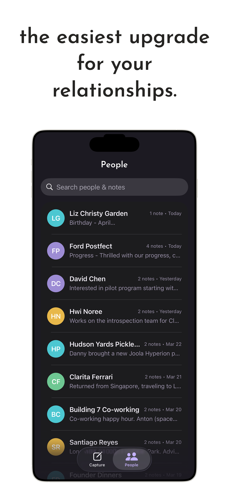

Orbal helps you build a world with more meaningful relationships. Your connections are the pillars of your life—don't let the details slip away.


Type a note. Orbal detects who it's about from natural language automatically.

Raw thoughts in, clean notes out. Key content is extracted and tidied for you.

Notes are suggested to link to your contacts instantly. Total context, zero effort.

Browse your people and see everything you've ever noted. Relationships that grow.
On iPhone 15 Pro and newer, Orbal runs entirely on-device. Your notes are encrypted with AES-256. We never train AI on your data, and we never sell your information. Period.